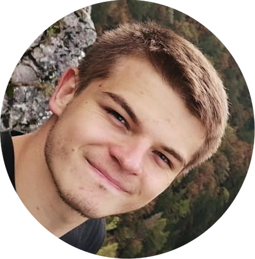

Autory
Volám sa Hanna Hryharouskaya. Ja som som z Bieloruska, miesto Brest.Do 2011 som študovala na matematicko-ekonomickom gimnaziu Žukova G.K v Breste.V rokoch 2011-2015 som študovala v Brestskom štátnom polytechnickom kolize (od 2015. roka už Brestká štátna technická univerzita) na stavebnej fakulte. Teraz bývam v Bratislave a študujem na Slovenskej technickej univerzite na fakulte elektrotechniky a informatiky.

Volám sa Tetiana Kukhelna. Som ukrajinka. Bývam v Bratislave a študujem na Slovenskej technickej univerzite na fakulte elektrotechniky a informatiky. Mám veľké plány do svojej budúcnosti. Túžba po poznaní a odpovede na moje otázky. Zmyslom života je byť šťastnou a robiť to, čo mi to prinesie.
A mind of moderate capacity which closely pursues one study must infallibly arrive at great proficiency in that study.
― Mary Shelley, Frankenstein

Volám sa Patrik Kupčulák, som študentom Slovenskej technickej univerzity v Bratislave a študujem aplikovanú informatiku. Informatika ma baví už od detstva. Mojim koníčkom je vývoj hier a šport.

Tuto môže byť tvoj text, nejaký popis, vlastnosti, na čom si pracoval, čomu sa venuješ, čo si riešil etc. REPEAT Tuto môže byť tvoj text, nejaký popis, vlastnosti, na čom si pracoval, čomu sa venuješ, čo si riešil etc. REPEAT Tuto môže byť tvoj text, nejaký popis, vlastnosti, na čom si pracoval, čomu sa venuješ, čo si riešil etc. REPEAT Tuto môže byť tvoj text, nejaký popis, vlastnosti, na čom si pracoval, čomu sa venuješ, čo si riešil etc.